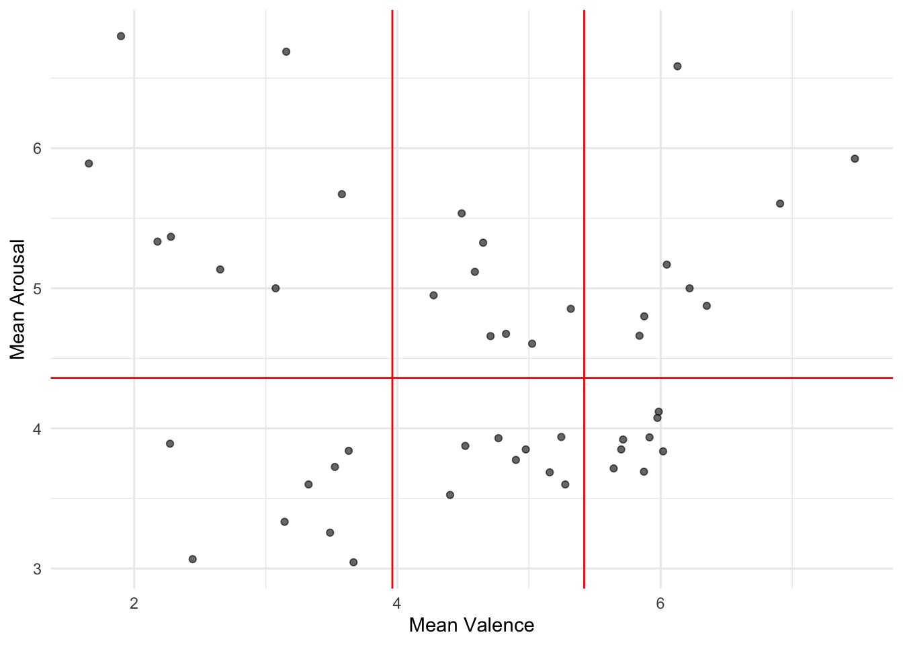
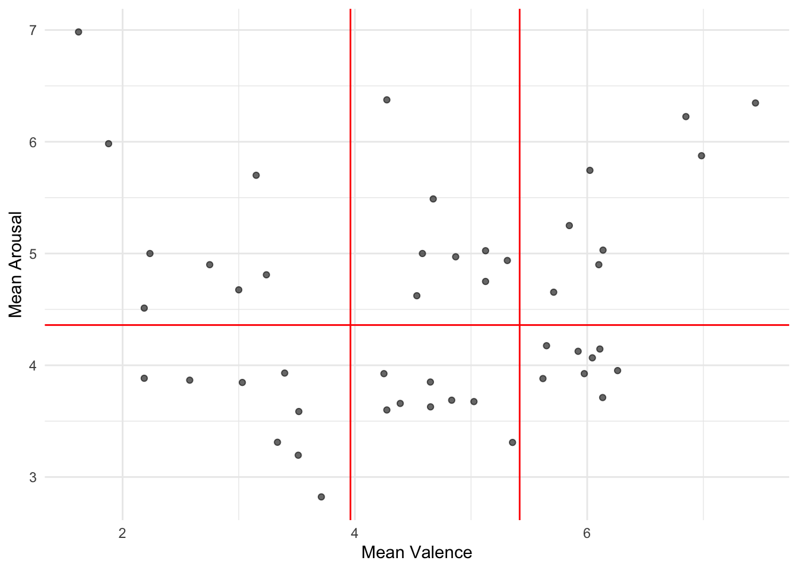

3 Whole-Data Analyses - Delay
This section includes analyses of sustained attention, recognition memory, and affective rating data from the encoding and retrieval components of the ‘delay’ version of the experiment described in ‘Experiments’. All participants from the sample were included in the following analyses. For analyses split by task performance or memory accuracy, see the ‘populations’ tab.
3.1 How often were participants lapsing on the task?
During the go/no-go task (encoding task), participants should have withheld a response when they saw a second presentation of the target image. A lapse occurs when they accidentally make a key press on one of these no-go target images. There were 50 target images shown during this task for each participant, so the maximum number of lapses is 50. Scroll through the table to see how often each participant made this mistake.
| Participant Private ID | target errors | filler & window errors |
|---|---|---|
| 11639003 | 1 | 1 |
| 11658164 | 7 | 2 |
| 11682054 | 4 | 5 |
| 11682072 | 6 | 4 |
| 11682073 | 6 | 2 |
| 11682075 | 20 | 39 |
| 11682076 | 7 | 9 |
| 11682083 | 5 | 3 |
| 11682085 | 7 | 0 |
| 11682102 | 5 | 3 |
| 11682176 | 5 | 4 |
| 11716961 | 15 | 39 |
| 11716963 | 4 | 5 |
| 11716967 | 10 | 0 |
| 11716969 | 12 | 9 |
| 11716973 | 12 | 8 |
| 11716974 | 3 | 0 |
| 11716976 | 8 | 3 |
| 11758400 | 16 | 4 |
| 11758405 | 8 | 3 |
| 11758407 | 1 | 1 |
| 11758411 | 3 | 7 |
| 11758414 | 7 | 1 |
| 11758422 | 4 | 1 |
| 11758428 | 3 | 3 |
| 11758429 | 8 | 1 |
| 11758444 | 3 | 1 |
| 11758523 | 14 | 8 |
| 11824218 | 15 | 2 |
| 11852210 | 11 | 3 |
| 11852217 | 4 | 0 |
| 11852219 | 3 | 2 |
| 11852234 | 13 | 7 |
| 11852235 | 8 | 0 |
| 11852238 | 12 | 7 |
| 11852253 | 3 | 1 |
| 11852258 | 5 | 0 |
| 11852267 | 5 | 0 |
| 11852276 | 7 | 0 |
| 11852914 | 7 | 0 |
| 11853201 | 2 | 0 |
| 11982641 | 11 | 19 |
| 11982658 | 2 | 0 |
| 11982667 | 8 | 5 |
| 11982671 | 20 | 30 |
| 11982674 | 6 | 0 |
| 11982683 | 1 | 1 |
| 11982727 | 9 | 5 |
3.2 Does pretrial reaction time predict lapses?
The average reaction times (RTs) were linearly detrended within participant, mean reaction times were then calculated for the 3 images prior to a target (pretrial RT). In the below plot, I compare the preceding window RT for target images when the participant correctly withheld a response (correct) and when they lapsed during this task. We would expect that reaction times for the correct condition would be slower than for the lapse condition. This would indicate that participants are reacting habitually vs. reactively to the images when they lapse.
From this comparison, we see that, in general, reaction time IS slower for the correct vs. lapse conditions, which is in line with prior findings.
3.3 Is memory above chance?
During the retrieval task, participants were asked to rate their memory of target images (and 50 memory lures) on a scale of 1 (sure old) - 6 (sure new). To ensure data quality for the later analyses which included participant memory data, I first checked that each participant’s memory was above chance.
I also took a look at the distributions of memory performance, using both d’ and A’prime’ as measures of performance. In both cases, it’s apparent that there are a ton of participants that are hovering just above chance. In the ‘populations’ section of this bookdown, I explore whether these ‘worse memory’ participants (under median) produce significantly different results than the ‘better memory’ participants.
Memory Performance Plots
3.4 How does pretrial reaction time relate to memory after a 24 hr delay?
## Estimate Std. Error z value Pr(>|z|)
## (Intercept) 0.59982421 0.10007676 5.9936414 2.051936e-09
## zrt 0.01207122 0.04900222 0.2463404 8.054188e-01## Generalized linear mixed model fit by maximum likelihood (Laplace Approximation) ['glmerMod']
## Family: binomial ( logit )
## Formula: hits ~ zrt + (1 + zrt | `Participant Private ID`)
## Data: delay_mem_att
##
## AIC BIC logLik deviance df.resid
## 2956.1 2984.8 -1473.0 2946.1 2324
##
## Scaled residuals:
## Min 1Q Median 3Q Max
## -2.1816 -1.0259 0.5688 0.7287 1.4672
##
## Random effects:
## Groups Name Variance Std.Dev. Corr
## Participant Private ID (Intercept) 0.38103 0.6173
## zrt 0.01368 0.1170 -0.09
## Number of obs: 2329, groups: Participant Private ID, 48
##
## Fixed effects:
## Estimate Std. Error z value Pr(>|z|)
## (Intercept) 0.59982 0.10008 5.994 2.05e-09 ***
## zrt 0.01207 0.04900 0.246 0.805
## ---
## Signif. codes: 0 '***' 0.001 '**' 0.01 '*' 0.05 '.' 0.1 ' ' 1
##
## Correlation of Fixed Effects:
## (Intr)
## zrt -0.0293.5 How does memorability relate to memory after a 24 hr delay?
## Estimate Std. Error z value Pr(>|z|)
## (Intercept) 0.58658969 0.10110049 5.8020460 6.551059e-09
## z_mem 0.01059175 0.05062222 0.2092312 8.342677e-013.6 How does valence relate to memory after a 24 hr delay?
## Estimate Std. Error z value Pr(>|z|)
## (Intercept) 0.58777195 0.10088626 5.826085 5.674263e-09
## zv -0.06069946 0.04659015 -1.302839 1.926297e-013.7 How does arousal relate to memory after a 24 hr delay?
## Estimate Std. Error z value Pr(>|z|)
## (Intercept) 0.58458763 0.10040247 5.8224426 5.799372e-09
## za 0.02393741 0.04530364 0.5283773 5.972375e-013.7.1 Interactive Model
## Generalized linear mixed model fit by maximum likelihood (Laplace Approximation) ['glmerMod']
## Family: binomial ( logit )
## Formula: hits ~ zrt * zv * za * z_mem + (1 + zrt + zv + za + z_mem | `Participant Private ID`)
## Data: delay_mem_att
## Control: glmerControl()
##
## AIC BIC logLik deviance df.resid
## 2976.8 3155.2 -1457.4 2914.8 2298
##
## Scaled residuals:
## Min 1Q Median 3Q Max
## -3.2994 -1.0042 0.5353 0.7239 1.9276
##
## Random effects:
## Groups Name Variance Std.Dev. Corr
## Participant Private ID (Intercept) 0.421154 0.64896
## zrt 0.015116 0.12295 -0.14
## zv 0.053392 0.23107 -0.44 0.68
## za 0.009076 0.09527 0.02 -0.51 0.22
## z_mem 0.063712 0.25241 -0.29 0.80 0.98 0.08
## Number of obs: 2329, groups: Participant Private ID, 48
##
## Fixed effects:
## Estimate Std. Error z value Pr(>|z|)
## (Intercept) 0.6091564 0.1053729 5.781 7.43e-09 ***
## zrt -0.0051421 0.0530815 -0.097 0.923
## zv -0.0327330 0.0628120 -0.521 0.602
## za -0.0116554 0.0554415 -0.210 0.833
## z_mem 0.0094055 0.0615399 0.153 0.879
## zrt:zv 0.0096989 0.0539344 0.180 0.857
## zrt:za 0.0780661 0.0517294 1.509 0.131
## zv:za -0.0720180 0.0469685 -1.533 0.125
## zrt:z_mem -0.0314413 0.0544321 -0.578 0.564
## zv:z_mem -0.0553342 0.0535410 -1.033 0.301
## za:z_mem 0.0750532 0.0552047 1.360 0.174
## zrt:zv:za 0.0009899 0.0454254 0.022 0.983
## zrt:zv:z_mem -0.0721793 0.0569412 -1.268 0.205
## zrt:za:z_mem -0.0739028 0.0605735 -1.220 0.222
## zv:za:z_mem -0.0325851 0.0503365 -0.647 0.517
## zrt:zv:za:z_mem 0.0506813 0.0544244 0.931 0.352
## ---
## Signif. codes: 0 '***' 0.001 '**' 0.01 '*' 0.05 '.' 0.1 ' ' 1
## optimizer (Nelder_Mead) convergence code: 0 (OK)
## Model failed to converge with max|grad| = 0.00786996 (tol = 0.002, component 1)## Estimate Std. Error z value Pr(>|z|)
## (Intercept) 0.6091563795 0.10537286 5.78096108 7.427507e-09
## zrt -0.0051420679 0.05308150 -0.09687119 9.228287e-01
## zv -0.0327329978 0.06281201 -0.52112646 6.022787e-01
## za -0.0116553573 0.05544150 -0.21022803 8.334897e-01
## z_mem 0.0094054837 0.06153990 0.15283555 8.785280e-01
## zrt:zv 0.0096989302 0.05393441 0.17982825 8.572874e-01
## zrt:za 0.0780660833 0.05172939 1.50912427 1.312670e-01
## zv:za -0.0720180011 0.04696850 -1.53332553 1.251957e-01
## zrt:z_mem -0.0314413335 0.05443205 -0.57762533 5.635171e-01
## zv:z_mem -0.0553342279 0.05354102 -1.03349229 3.013736e-01
## za:z_mem 0.0750531987 0.05520466 1.35954465 1.739741e-01
## zrt:zv:za 0.0009898707 0.04542537 0.02179114 9.826146e-01
## zrt:zv:z_mem -0.0721792734 0.05694117 -1.26761136 2.049368e-01
## zrt:za:z_mem -0.0739028335 0.06057349 -1.22005249 2.224450e-01
## zv:za:z_mem -0.0325850872 0.05033652 -0.64734484 5.174088e-01
## zrt:zv:za:z_mem 0.0506812670 0.05442438 0.93122364 3.517379e-01